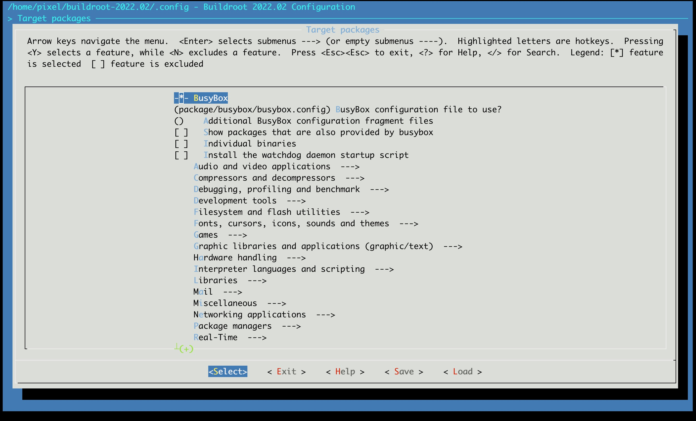

Rootfs
制作根文件系统主要是根据需求，配置Buildroot中 Target Packages的选项

5.1 Busybox
在嵌入式系统中一般选用Busybox作为常见工具套件集，BusyBox 是一个集成了三百多个最常用Linux命令和工具的软件。BusyBox 包含了一些简单的工具，例如ls、cat和echo等等，还包含了一些更大、更复杂的工具，例grep、find、mount以及telnet。
有些人将 BusyBox 称为 Linux 工具里的瑞士军刀。简单的说BusyBox就好像是个大工具箱，它集成压缩了 Linux 的许多工具和命令，也包含了 Linux 系统的自带的shell。Busybox可以有效地缩减应用程序的体积，加快加载的速度。
如果需要配置busybox，可以输入
make busybox-menuconfig
配置好后执行以下命令更新配置为busybox的默认配置，这样一旦执行make clean后，本次生成的busybox配置文件仍然可以生效
make busybox-update-config